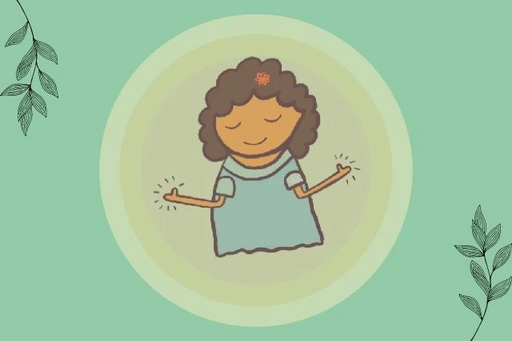

One of the challenges faced by people in rural Australia who have a mental illness is managing their physical health alongside their psychiatric problems.
The reasons for these are:
- Symptoms associated with a mental illness makes everyday activities like exercising or eating well very difficult. You’ll also find it challenging to give up habits like smoking or drinking, possibly because of the motivation of a sense of hopelessness as a result of depression.
- Several medications used for treatment can cause problems for your physical health due to their side effects.
- Several mental health professionals support the patient’s mental health but fail to adequately address their client’s physical health.
We’ve listed below the suggestion that we offer clients who see our psychiatrists around managing their physical health.
alt="">The ways that you can help yourself to improve physical and mental health:
- Educating yourself
- High blood pressure
- Weight problems
- Substance use (problems with alcohol and drugs)
- Heart problems
- Teeth and gum issues
- Asthma, diabetes, and other chronic health conditions
- A few changes are necessary
- Have regular physical and mental health checkups
- He or she will examine your medical history
- Your doctor will ask questions about your lifestyle (diet, smoking, and drinking habits)
- Check your weight
- Review your blood pressure to see whether it’s on the high or low side
- Order blood sugar and cholesterol tests
- Provide or recommend screening tests (such as a bowel cancer test or a Pap smear).
- Understand how Physical Exercise and a healthy diet improve your health?
- Having lots of vegetables, legumes, and fruit
- Including wholemeal pasta, rice, and bread in your diet
- Reducing your intake of alcohol
- Reducing the number of sugary foods, and drinks, and high fat, salt, or sugary foods.
- Drinking lots of water
- Care about your teeth’s and gum’s health
- Brush twice daily
- Visit your regional community dentist at least once a year
- Drink plain water in place of sugary drinks
- Find out if the medication that you are taking has any adverse effects on your teeth
- Know about the risks and benefits of your medications
Patients with a mental illness in regional Australia are at a higher risk of developing the following conditions.
If you understand these physical risks associated with mental illness, you can work along with your health providers including your GP.
Making small changes to your physical health can have multiple benefits.
Cook your meals, eat your meals regularly and drink water in place of sugary or carbonated drinks. In addition, join a program such as “Quitline” that will help you quit smoking. Similarly, you can take a walk nearby rather than driving.
Psychiatrists and GP in Australia frequently run physical health check on their patients. Request if you’ve not done a checkup in a while. In fact, physical health checks for clients across Australia including in regional centres like Broome and Busselton should be happening annually.
Your doctor doing the physical health check could do the following:
Physical Exercise
An active lifestyle promotes good physical and mental health. Therefore, it is not surprising to know that exercise has positive benefits on mental health. People have reported and evidence shows an improvement in mental health symptoms after engaging in exercise.
In fact, there are many community services across regional Australia that promote physical activity. So, you can start by finding an activity or sport that they like. If you belong to a mental health support group in Broome or Busselton, you can request assistance in engaging in sport-related community activities.
Healthy diet
A healthy diet is important for your mood, health, and energy.
In fact, Healthy eating involves:
To maintain the health of your teeth and gums, do the following:
Inquire from your psychiatrist about the risks and benefits of your medications.
Certain medications have their side effects, for instance, causing you to feel dull, or even causing weight gain. For instance, antipsychotics have effects on cholesterol, weight, and blood sugar levels. Ask your doctor if it is possible to switch medications or step down the dose to minimise the impacts on your physical health.
Supporting a person with their physical health
If your friend or a family member has a mental illness, you can help improve their physical health in several ways.
- Work together to achieve your goals
- Taking a 30-minute walk couple of times a week
- Drinking water after meals
- Drawing up a weekly meal plan every Sunday
- Set a good example
- Reduce your tobacco smoking or alcohol-drinking habits
- Cook together
- Create daily cooking, eating, and shopping plan.
Assist the person you are caring for to choose at least one and up to three realistic goals for their physical health.
For instance,
As a friend or relative, you can use your actions to influence the person you are caring for.
You may:
Which Professional can assist with physical and mental health?
The GP
If you have any inquiries about your physical health, then you can approach your GP. There are many GPs across regional areas such as in Busselton and Broome who keenly manage the healthcare of their client with mental health issues.
A GP in Australia can:
- Conduct a physical health check
- Make provisions for screening tests
- Make referrals to other health professionals in Australia if need be.
Your GP is indispensable when it comes to taking care of your health. Ensure your psychiatrist informs your GP about diagnostic or treatment changes.
Psychiatrist
Your psychiatrist can help all aspects of your physical and mental health. You can inquire
from your psychiatrist about:
Physical health challenges experienced by people with mental illness in regional Australia.
Side effects of the medications that have been prescribed for you, and their effects on your physical health.
Physical symptoms such as a craving for junk food, weight gain, etc.
Dietitian
Dietitians are specialists in nutrition and healthy eating. They can help you to create a good eating plan – one that suits your condition. They can educate you on healthy eating, cooking, and food shopping.
You can locate an accredited Dietitian in Australia here.